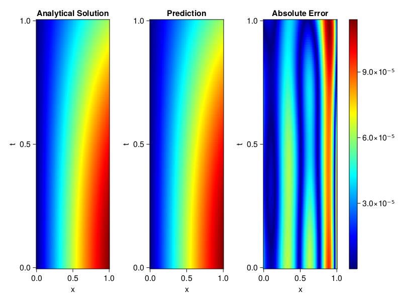
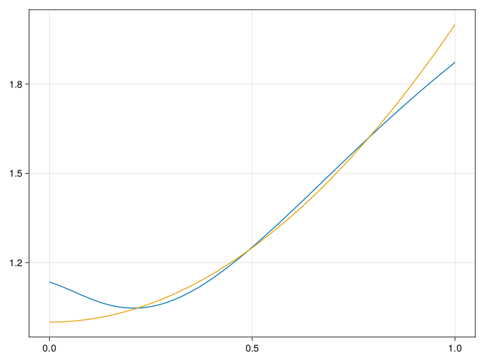

Inverse problem for the wave equation with unknown velocity field
We are going to sovle the wave equation.
using Sophon, ModelingToolkit, IntervalSets
using Optimization, OptimizationOptimJL
@parameters x, t
@variables u(..), c(..)
Dₜ = Differential(t)
Dₜ² = Differential(t)^2
Dₓ² = Differential(x)^2
s(x,t) = abs2(x) * sin(x) * cos(t)
eq = Dₜ²(u(x,t)) ~ c(x) * Dₓ²(u(x,t)) + s(x,t)
bcs = [u(x, 0) ~ sin(x),
Dₜ(u(x, 0)) ~ 0,
u(0, t) ~ 0,
u(1, t) ~ sin(1) * cos(t)]
domains = [t ∈ Interval(0.0, 1.0),
x ∈ Interval(0.0, 1.0)]
@named wave = PDESystem(eq, bcs, domains, [t,x], [u(x,t),c(x)])\[ \begin{align} \frac{\mathrm{d}^{2}}{\mathrm{d}t^{2}} u\left( x, t \right) =& c\left( x \right) \frac{\mathrm{d}^{2}}{\mathrm{d}x^{2}} u\left( x, t \right) + \cos\left( t \right) \left|x\right|^{2} \sin\left( x \right) \end{align} \]
Here the velocity field $c(x)$ is unknown, we will approximate it with a neural network.
pinn = PINN(u = FullyConnected((2,16,16,16,1), sin),
c = FullyConnected((1,16,16,1), tanh))
sampler = QuasiRandomSampler(500,100)
strategy = NonAdaptiveTraining(1, (10,10,1,1))NonAdaptiveTraining{Int64, NTuple{4, Int64}}(1, (10, 10, 1, 1))Next we generate some data of $u(x,t)$. Here we place two sensors at $x=0.1$ and $x=0.5$.
ū(x,t) = sin(x) * cos(t)
x_data = hcat(fill(0.1, 1, 50), fill(0.5, 1, 50))
t_data = repeat(range(0.0, 1.0, length = 50),2)'
input_data = [x_data; t_data]
u_data = ū.(x_data, t_data)1×100 Matrix{Float64}:
0.0998334 0.0998126 0.0997503 0.0996464 … 0.275281 0.267213 0.259035Finally we construct the inverse problem and solve it.
additional_loss(phi, θ) = sum(abs2, phi.u(input_data, θ.u) .- u_data)
prob = Sophon.discretize(wave, pinn, sampler, strategy; additional_loss=additional_loss)
@time res = Optimization.solve(prob, BFGS(), maxiters=1000)u: ComponentVector{Float64}(u = (layer_1 = (weight = [-0.5180919479994714 0.6034253432099811; -0.4538379759979242 -0.4168476076082593; … ; -0.8180110514469944 -0.1316942141564501; 1.207974024631354 0.035275185101738875], bias = [-0.23558038124941072; 0.05657696824017541; … ; 0.17720296126957275; -0.19021773267669048;;]), layer_2 = (weight = [0.4839869686640189 0.508180706963337 … 0.06942237778842007 -0.06816144359765587; 0.33298322422175136 0.14437093098248568 … -0.5933589389721294 0.4464013138183553; … ; -0.3579785004491074 -0.43504031978180774 … 0.44499632597054567 -0.3669398370536641; -0.16891590644821278 -0.17667749050549092 … -0.08443592316322557 0.12045714339670856], bias = [-0.016068244370839025; 0.00620262908939281; … ; 0.02700264035528484; 0.283913222062004;;]), layer_3 = (weight = [0.36275829168156737 0.22316853212703597 … -0.13162319954674792 -0.09976496036916219; -0.1914515977170229 -0.003008260327220383 … -0.08144941705383622 -0.2928670745501887; … ; 0.018329622195883244 0.2263288075499679 … 0.5034468204236716 0.4765129248452649; 0.2135283373635745 0.3439459908034196 … -0.35051145832684544 -0.10404440461640249], bias = [-0.13498973053422336; -0.10917340403085296; … ; -0.058786882761015485; -0.08570905927777459;;]), layer_4 = (weight = [0.8355848866826732 0.18206137491045704 … 0.5982824159519518 0.555297508906222], bias = [-0.04443399804140935;;])), c = (layer_1 = (weight = [-0.28666786897497576; 2.532278116535428; … ; -0.39712951067390284; -0.17081331974298733;;], bias = [0.13868041817289942; 0.1578510295189944; … ; 0.07689128193641628; 0.021900961038880985;;]), layer_2 = (weight = [0.20239624065075218 -0.14746593254357282 … -0.507648788700521 0.5040333305232099; 0.6599917417455033 0.21820390240866408 … 0.15580746233930898 0.5855425755581923; … ; -0.5551606911609525 -0.1240556207009961 … 0.41657430911363524 0.143907480994988; 0.4135876500105676 0.33967049226380835 … -0.11717652045102175 0.13458694906872573], bias = [0.06340713504273746; 0.01533040491519918; … ; -0.17034732115168727; 0.186207256523958;;]), layer_3 = (weight = [0.2572938390746812 0.03180323597020539 … -0.5280607411653855 0.22501910951934528], bias = [0.36361327584244096;;])))Let's visualize the predictted solution and inferred velocity
using CairoMakie
ts = range(0, 1; length=100)
xs = range(0, 1; length=100)
u_pred = [pinn.phi.u([x, t], res.u.u)[1] for x in xs, t in ts]
c_pred = [pinn.phi.c([x], res.u.c)[1] for x in xs]
u_true = [ū(x, t) for x in xs, t in ts]
c_true = 1 .+ abs2.(xs) |> vec
axis = (xlabel="x", ylabel="t", title="Analytical Solution")
fig, ax1, hm1 = heatmap(xs, ts, u_true, axis=axis; colormap=:jet)
ax2, hm2= heatmap(fig[1, end+1], xs, ts, u_pred, axis= merge(axis, (;title = "Prediction")); colormap=:jet)
ax3, hm3 = heatmap(fig[1, end+1], xs, ts, abs.(u_true .- u_pred), axis= merge(axis, (;title = "Absolute Error")); colormap=:jet)
Colorbar(fig[:, end+1], hm3)
fig
fig, ax = lines(xs, c_pred)
lines!(ax, xs, c_true)
fig